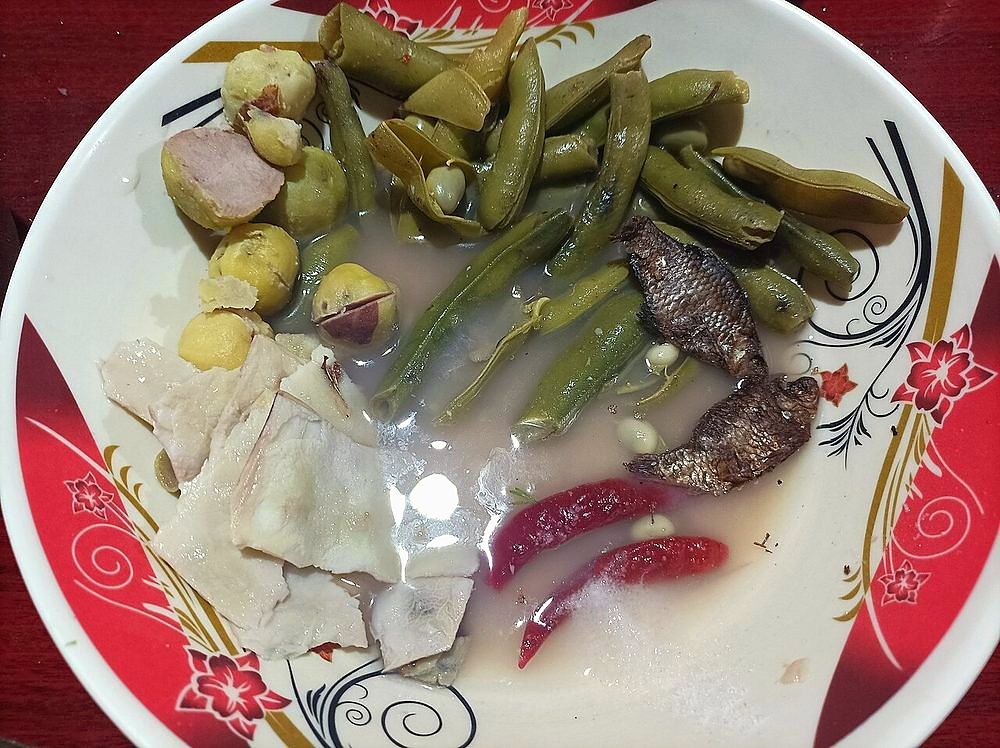

Eromba
manipuri mash of boiled vegetables, fierce chilli and fermented fish, eaten with rice

Contains: fish
Checked against the ingredient list for ten allergens: milk, egg, fish, crustaceans, tree nuts, peanuts, sesame, mustard, soy and gluten. Brands vary, so read the label on anything new to you.
Ingredients
Quantities for 4.
- 300g, peeled and quartered Potato
- 200g, cut into large chunks Eggplant
- 100g, topped and cut into 3cm lengths French Beansoptional
- 30g Dried Fishstands in for ngari, the Manipuri fermented fish; the catalogue has no ngari, and dried fish rinsed and dry-roasted gives the closest savoury weight
- 6, stems removed Dried Red Chillifor umorok, the local king chilli; use three if you want to live
- 5, greens and whites finely chopped Spring Onionthe nearest thing to maroi napakpi, the Manipuri hill chive
- 3 tbsp, chopped Coriander Leavesoptional
- to taste Salt
- 700ml Water
Cookware
stovetop
Before you start
- Rinse the dried fish twice in warm water and pat it dry before roasting, or the eromba comes out salty and rank rather than savoury.
- Eromba is a mash, not a curry. It should hold its shape on the spoon. Boil the vegetables in as little water as will cover them.
- Everything gets pounded together at the end, so cut the vegetables large; they only need to be soft.
Method
- Dry-roast the dried fish in a small pan over low heat for 3 minutes, turning, until it smells toasty and goes brittle. Crumble it and set aside.Low heat and keep it moving. Scorched dried fish tastes of nothing but burnt.
- Roast the dried red chillies in the same pan 40 seconds a side, until they darken and puff slightly. Pound them to a coarse paste with a pinch of salt.Open a window. Roasting this many chillies will clear the room.
- Boil the potato in the water for 8 minutes.
- Add the eggplant and beans and boil 8 minutes more, until everything is completely tender and the potato is starting to fall apart.
- Drain, keeping about 100ml of the cooking water.
- Mash the vegetables roughly in the pot with the back of a ladle, leaving some lumps.
- Work in the crumbled fish, the chilli paste and salt, adding the reserved water a spoon at a time until it is thick and scoopable.
- Fold in the spring onion and coriander off the heat and serve at room temperature with hot rice.The greens go in raw at the end. Cooked, they lose the sharp note the mash is built around.
Safe temperatures: Fish is done at 63°C / 145°F, or when it turns opaque and flakes easily. Reheat leftovers to 74°C / 165°F. FoodSafety.gov
Storage
Keeps 2 days refrigerated. Serve at room temperature rather than reheated; if it has stiffened, loosen it with a tablespoon of warm water and fresh chopped spring onion.
Nutrition Medium estimate
Low protein: 8 g a serving, 29% of the calories
| Per serving188 g | Per 100 g | |
|---|---|---|
| Calories | 108 kcal | 58 kcal |
| Protein | 7.8 g | 4 g |
| Carbohydrate | 19.6 g | 10 g |
| of which sugars | 3.7 g | 2 g |
| Fibre | 4.6 g | 2 g |
| Fat | 0.5 g | 0 g |
| of which saturated | 0.1 g | 0 g |
| of which unsaturated | 0.3 g | 0 g |
Ingredients given to taste count as zero, so the real figures run a little higher. Estimated from raw ingredients using USDA FoodData Central.
Times, yields, allergens and nutrition are guidance. Use your own judgement on doneness and on storing. More in About.